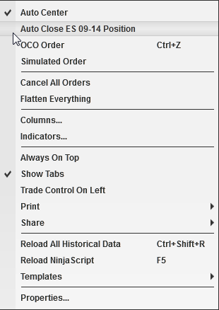

|
<< Click to Display Table of Contents >> Auto Close Position |


|
Auto Close Position
|
<< Click to Display Table of Contents >> Auto Close Position |
|
Auto Close Position is a strategy that will automatically close your position at an user defined time. A position will be closed using the NinjaTrader close algorithm. The user defined close time can be set via the "Auto Close Position - Time" property located in the Trading category of the General Options menu. You can enable or disable this strategy via any NinjaTrader order entry screen's right mouse click context menu.

Notes: This feature not available to Direct Edition license users and will be disabled. Please contact [email protected] for upgrade options. If auto close is configured for all instruments in the Options, disabling Auto close on an entry window will have no affect since it is globally set to close for all instruments. |